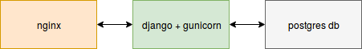
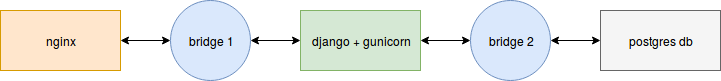
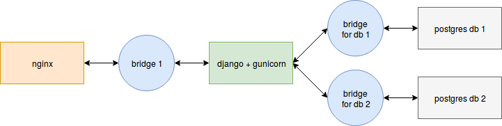
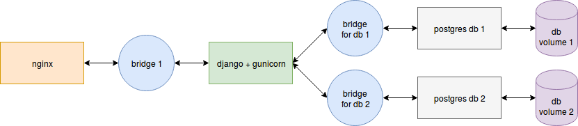

Docker Compose with NginX, Django, Gunicorn and multiple Postgres databases

This post explains how to setup your Docker configuration for a web application based on the Django framework. I got a lot of inspiration from other tutorials and Docker examples: you can check these resources with the links at the bottom of the post. You can also directly check the repository that reflects this tutorial.
In this particular example, we will use Gunicorn, but it should be easy enough to replace it with an alternative Python WSGI HTTP server such as uwsgi. We will also make use of pipenv, with related Pipfile and Pipfile.lock, instead of plain pip and requirements.txt files.
Here is the plan:
- Overview: to get a better understanding of the whole thing
- Dockerfile: a simple Django application served by Gunicorn
- Pipenv: spice things up with Pipfile and Pipfile.lock
- Compose: add a container for NginX
- Compose: add containers for one or more Postgres databases
- Static files: collecting, storing and serving
- Resources
Overview: to get a better understanding of the whole thing¤
So, let's start with some drawings in order to get a better idea of what we want to accomplish, and how everything will fit together.
In this first, very simple image, you can see that we want three containers: one for NginX, one for Django + Gunicorn (they always go together), and one for our database. The NginX container communicate with the Django+Gunicorn one, which itself connects to the Postgres container. Pretty straight-forward, right?

In our configuration, it means we will declare three containers, or three services if we talk in terms of Docker Compose.
Except that we need bridges between the containers, in order for them to communicate. Let's add these bridges:

In docker-compose.yml, we will declare these bridges thanks to the networks directive, and connect them to the right containers.
Of course, you may want or need several databases for your project. So here is an updated image with two database containers. It's simply a matter of adding a new brige:

Once you know how to do it for two databases, it's very easy to add more.
Now, this is enough for local development. But each time you restart your containers or services, the data in the Postgres databases will be lost. In production, we need these data to be persistent. If we keep the data in production, let's keep them in local environment as well. To do this, we will use volumes, a feature of Docker:

Alright, that is enough for the overview, let's get our hands dirty!
Dockerfile: a simple Django application served by Gunicorn¤
If you don't already have a simple Django project available for testing, I invite you to create one with django-admin startproject hello.
Here is the directory/file tree you should have in order to follow this tutorial:
. # Your current directory, created for this tutorial
└── hello # The Django project
├── hello # The main Django app of your project
│ ├── __init__.py
│ ├── settings.py
│ ├── urls.py
│ └── wsgi.py
└── manage.py
Now that you have a working Django project, you can run it by going into the hello directory and type ./manage.py runserver. Go to http://localhost:8000 to see the result.
Instead of running it with the Django runserver management command, let's try with Gunicorn. First, install it with pip install gunicorn, be it in a virtualenv or system-wide with sudo pip install gunicorn.
It's as easy as running gunicorn --bind :8000 hello.wsgi:application from inside the Django project. If you are one directory above, use gunicorn --chdir hello --bind :8000 hello.wsgi:application.
We have all we need to write our Dockerfile:
# start from an official image
FROM python:3.6
# arbitrary location choice: you can change the directory
RUN mkdir -p /opt/services/djangoapp/src
WORKDIR /opt/services/djangoapp/src
# install our two dependencies
RUN pip install gunicorn django
# copy our project code
COPY . /opt/services/djangoapp/src
# expose the port 8000
EXPOSE 8000
# define the default command to run when starting the container
CMD ["gunicorn", "--chdir", "hello", "--bind", ":8000", "hello.wsgi:application"]
The Dockerfile must be placed at the root of your test directory. As a reminder:
. # Your current directory, created for this tutorial
├── hello # The Django project
│ ├── hello # The main Django app of your project
│ └── manage.py
└── Dockerfile # Your Dockerfile
We are now able to build our container with docker build . -t hello, and to start it with docker run -p 8000:8000 hello. The -p 8000:8000 option says to bind the port 8000 of the host to the port 8000 of the container, allowing you to go to http://localhost:8000 and see your application running as if you were inside of the container.
Pipenv: spice things up with Pipfile and Pipfile.lock¤
This step is completely optional. If you prefer to use plain pip and requirements files, you can skip this section.
First install pipenv with pip install pipenv, or system-wide with sudo pip install pipenv. Since we only need Django and Gunicorn, our Pipfile will be very simple:
[[source]]
url = "https://pypi.python.org/simple"
verify_ssl = true
name = "pypi"
[packages]
Django = "*"
gunicorn = "*"
[requires]
# our Dockerfile is based on Python 3.6
python_version = "3.6"
Just like the Dockerfile, Pipfile must be placed at the root of the project.
.
├── hello
│ ├── hello
│ └── manage.py
├── Dockerfile
└── Pipfile
Simply run pipenv lock to create Pipfile.lock from Pipfile.
Now we need to update our Dockerfile to use pipenv:
# start from an official image
FROM python:3.6
# arbitrary location choice: you can change the directory
RUN mkdir -p /opt/services/djangoapp/src
WORKDIR /opt/services/djangoapp/src
# install our dependencies
# we use --system flag because we don't need an extra virtualenv
COPY Pipfile Pipfile.lock /opt/services/djangoapp/src/
RUN pip install pipenv && pipenv install --system
# copy our project code
COPY . /opt/services/djangoapp/src
# expose the port 8000
EXPOSE 8000
# define the default command to run when starting the container
CMD ["gunicorn", "--chdir", "hello", "--bind", ":8000", "hello.wsgi:application"]
You can rebuild the image with docker build . -t hello and try to run it again to see if everything works correctly.
Compose: add a container for NginX¤
Since we will then have two containers, one for Django + Gunicorn, and one for NginX, it's time to start our composition with Docker Compose and docker-compose.yml. Create your docker-compose.yml file at the root of the project, like following:
.
├── hello
│ ├── hello
│ └── manage.py
├── docker-compose.yml
├── Dockerfile
└── Pipfile
We are gonna use the version 3 of the configuration syntax. First, we add the Django+Gunicorn service:
version: '3'
services:
djangoapp:
build: .
volumes:
- .:/opt/services/djangoapp/src
ports:
- 8000:8000
We simply tell Docker Compose that the djangoapp service must use an image that is built from the current directory, therefore looking for our Dockerfile. The volumes directive tells to bind the current directory of the host to the /opt/services/djangoapp/src directory of the container. The changes in our current directory will be reflected in real-time in the container directory. And reciprocally, changes that occur in the container directory will occur in our current directory as well.
Build and run the service with docker-compose up. The name of the image will be automatically chosen by Docker Compose (it will be the name of the current directory with _djangoapp appended).
Ok, let's add our NginX service now:
version: '3'
services:
djangoapp:
build: .
volumes:
- .:/opt/services/djangoapp/src
nginx:
image: nginx:1.13
ports:
- 8000:80
volumes:
- ./config/nginx/conf.d:/etc/nginx/conf.d
depends_on: # <-- wait for djangoapp to be "ready" before starting this service
- djangoapp
Note that we removed the ports directive from our djangoapp service. Indeed we will not communicate directly with Gunicorn anymore, but with NginX. We still want to access our app at http://localhost:8000, and we want NginX to listen to the port 80 in the container, so we use ports: - 8000:80.
Note: in a production environment, we would use 80:80 instead.
We also bind a local directory to the /etc/nginx/conf.d container directory. Let's create it and see what's inside:
mkdir -p config/nginx/conf.d
touch config/nginx/conf.d/local.conf
You should now have the following files and directories:
.
├── config
│ └── nginx
│ └── conf.d
│ └── local.conf
├── docker-compose.yml
├── Dockerfile
├── hello
│ ├── hello
│ └── manage.py
├── Pipfile
└── Pipfile.lock
The config/nginx/conf.d/local.conf file contains our NginX configuration:
# first we declare our upstream server, which is our Gunicorn application
upstream hello_server {
# docker will automatically resolve this to the correct address
# because we use the same name as the service: "djangoapp"
server djangoapp:8000;
}
# now we declare our main server
server {
listen 80;
server_name localhost;
location / {
# everything is passed to Gunicorn
proxy_pass http://hello_server;
proxy_set_header X-Forwarded-For $proxy_add_x_forwarded_for;
proxy_set_header Host $host;
proxy_redirect off;
}
}
But before we try this out, remember that we need a bridge to make our services able to communicate?
Update your docker-compose.yml as follow:
version: '3'
services:
djangoapp:
build: .
volumes:
- .:/opt/services/djangoapp/src
networks: # <-- here
- nginx_network
nginx:
image: nginx:1.13
ports:
- 8000:80
volumes:
- ./config/nginx/conf.d:/etc/nginx/conf.d
depends_on:
- djangoapp
networks: # <-- here
- nginx_network
networks: # <-- and here
nginx_network:
driver: bridge
Run docker-compose up and see if you can still see the Django default page at http://localhost:8000.
Compose: add containers for one or more Postgres databases¤
We now want to use Postgres instead of the starting default SQLite database. We will need to update several things: our Pipfile, because we need the psycopg2 Python package, the Postgres driver; our Django project settings; and our docker-compose.yml file.
-
Pipfile becomes:
[[source]] url = "https://pypi.python.org/simple" verify_ssl = true name = "pypi" [packages] Django = "*" gunicorn = "*" "psycopg2" = "*" [requires] # our Dockerfile is based on Python 3.6 python_version = "3.6"Don't forget to run
pipenv lockto update your lock file, and rebuild your Docker image withdocker-compose build. -
In the Django project settings, update the DATABASE setting from:
DATABASES = { "default": { "ENGINE": "django.db.backends.sqlite3", "NAME": os.path.join(BASE_DIR, "db.sqlite3"), } }...to:
DATABASES = { "default": { "ENGINE": "django.db.backends.postgresql_psycopg2", "NAME": "database1", "USER": "database1_role", "PASSWORD": "database1_password", "HOST": "database1", # <-- IMPORTANT: same name as docker-compose service! "PORT": "5432", } }As you can see, we used
database1everywhere, for the name, user, password and host. In fact, we can change these values to whatever suits us. But we must ensure the database container will use the same values! To do that, we will copy these values in a configuration file destined to be read by our database container.Create a
dbdirectory in theconfigone, and add thedatabase1_envfile:mkdir config/db touch config/db/database1_envThe contents of
config/db/database1_envmust then be:POSTGRES_USER=database1_role POSTGRES_PASSWORD=database1_password POSTGRES_DB=database1These variable are used by the Postgres Docker image, for more information please check out the documentation on docs.docker.com or hub.docker.com.
It means that, when started, the Postgres container will create a database called
database1, assigned to the roledatabase1_rolewith passworddatabase1_password. If you change these values, remember to also change them in the DATABASES setting. -
We are now ready to add our service in
docker-compose.yml. The added service must have the same name than what is declared in the DATABASES setting:version: '3' services: djangoapp: build: . volumes: - .:/opt/services/djangoapp/src networks: - nginx_network - database1_network # <-- connect to the bridge depends_on: # <-- wait for db to be "ready" before starting the app - database1 nginx: image: nginx:1.13 ports: - 8000:80 volumes: - ./config/nginx/conf.d:/etc/nginx/conf.d depends_on: - djangoapp networks: - nginx_network database1: # <-- IMPORTANT: same name as in DATABASES setting, otherwise Django won't find the database! image: postgres:10 env_file: # <-- we use the previously defined values - config/db/database1_env networks: # <-- connect to the bridge - database1_network volumes: - database1_volume:/var/lib/postgresql/data networks: nginx_network: driver: bridge database1_network: # <-- add the bridge driver: bridge volumes: database1_volume:You should be able to understand everything here. However, we added two new things: the
database1: volumes:directive, and the rootvolumes:directive. You need to declare your volumes in the rootvolumes:directive if you want them to be kept persistently. Then, you can bind a volume to a directory in the container. Here, we bind our declareddatabase1_volumeto thedatabase1container's/var/lib/postgresql/datadirectory. Everything added to this directory will be persistently stored in the volume calleddatabase1_volume. So each subsequent run of the container will have access to the previous data! It means you can stop and restart your service without losing the data.
OK, let's try it. As we are using Django, we need to "migrate" the database first. To do this, we will simply use Docker Compose to start our djangoapp service and run the migration command inside it:
docker-compose build # to make sure everything is up-to-date
docker-compose run --rm djangoapp /bin/bash -c "cd hello; ./manage.py migrate"
From now on, it should be really easy to add other databases: just add other database services (database2) with their networks volumes (remember to connect the networks and bind the volumes), update your DATABASES setting in the Django project, and create the environment file for each database in config/db.
Static files: collecting, storing and serving¤
UPDATE: a lot of us (including myself) seem to have trouble updating the static files in the designated Docker volume. In retrospect, collecting the static files in the Dockerfile might not be a good idea, because of the caching mechanisms of Docker. A simple and effective solution, mentioned by Isaac T Chikutukutu in the comments, is to remove this command from the Dockerfile and manually run it when needed: docker-compose run djangoapp hello/manage.py collectstatic --no-input
I edited the rest of the post accordingly.
(End of update)
Let's not forget about the static files! In order for NginX to serve them, we will update the config/nginx/conf.d/local.conf file, as well as our docker-compose.yml file. Static files will be stored in volumes. We also need to set the STATIC_ROOT and MEDIA_ROOT variables in the Django project settings.
-
NginX configuration:
upstream hello_server { server djangoapp:8000; } server { listen 80; server_name localhost; location / { proxy_pass http://hello_server; proxy_set_header X-Forwarded-For $proxy_add_x_forwarded_for; proxy_set_header Host $host; proxy_redirect off; } location /static/ { alias /opt/services/djangoapp/static/; } location /media/ { alias /opt/services/djangoapp/media/; } } -
Django project settings:
# as declared in NginX conf, it must match /opt/services/djangoapp/static/ STATIC_ROOT = os.path.join(os.path.dirname(os.path.dirname(BASE_DIR)), "static") # do the same for media files, it must match /opt/services/djangoapp/media/ MEDIA_ROOT = os.path.join(os.path.dirname(os.path.dirname(BASE_DIR)), "media") -
Volumes in
docker-compose.yml:version: '3' services: djangoapp: build: . volumes: - .:/opt/services/djangoapp/src - static_volume:/opt/services/djangoapp/static # <-- bind the static volume - media_volume:/opt/services/djangoapp/media # <-- bind the media volume networks: - nginx_network - database1_network depends_on: - database1 nginx: image: nginx:1.13 ports: - 8000:80 volumes: - ./config/nginx/conf.d:/etc/nginx/conf.d - static_volume:/opt/services/djangoapp/static # <-- bind the static volume - media_volume:/opt/services/djangoapp/media # <-- bind the media volume depends_on: - djangoapp networks: - nginx_network database1: image: postgres:10 env_file: - config/db/database1_env networks: - database1_network volumes: - database1_volume:/var/lib/postgresql/data networks: nginx_network: driver: bridge database1_network: driver: bridge volumes: database1_volume: static_volume: # <-- declare the static volume media_volume: # <-- declare the media volume -
And finally, collect the static files each time you need to update them, by running:
docker-compose run djangoapp hello/manage.py collectstatic --no-input
Resources¤
Here are the resources I used to write this tutorial:
- Nginx+Flask+Postgres multi-container setup with Docker Compose
- Docker how to Django + uwsgi/gunicorn + nginx?
- Django tutorial using Docker, Nginx, Gunicorn and PostgreSQL.
- Django Development With Docker Compose and Machine
- Deploy Django, Gunicorn, NGINX, Postgresql using Docker
- Docker, how to expose a socket over a port for a Django Application
And here is the repository that reflects this tutorial (with a few more things).
Don't hesitate to share other interesting resources in the comment section!